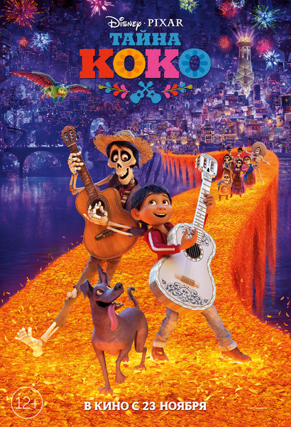
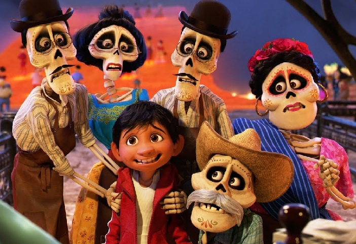

Тайна Коко (2017)
«Тайна Коко» (англ. Coco) — полнометражный компьютерный анимационный музыкальный фильм 2017 года, созданный американской студией Pixar и выпущенный компанией Walt Disney Pictures.
Концепция фильма основана на мексиканском празднике День мёртвых. Pixar приступила к созданию картины в 2016 году. В поисках вдохновения Анкрич вместе с членами съёмочной группы провели исследовательскую экспедицию в Мексику. Образы скелетов в фильме были переработаны, дабы придать им привлекательность. Композитор Майкл Джаккино, который работал над предыдущими картинами Pixar, вернулся к работе над написанием музыки.
12-летний Мигель живёт в мексиканской деревушке в семье сапожников и тайно мечтает стать музыкантом. Тайно, потому что в его семье музыка считается проклятием. Когда-то его прапрадед оставил жену, прапрабабку Мигеля, ради мечты, которая теперь не даёт спокойно жить и его праправнуку. С тех пор музыкальная тема в семье стала табу. Мигель обнаруживает, что между ним и его любимым певцом Эрнесто де ла Крусом, ныне покойным, существует некая связь. Паренёк отправляется к своему кумиру в Страну Мёртвых, где встречает души предков. Мигель знакомится там с духом-скелетом по имени Гектор, который становится его проводником. Вдвоём они отправляются на поиски де ла Круса.
СМОТРЕТЬ ТРЕЙЛЕР СМОТРЕТЬ МУЛЬТФИЛЬМ